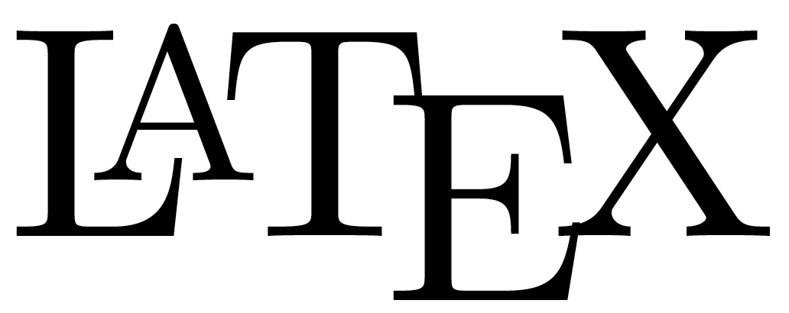

E quando só palavras não bastam para comunicar seus dados?
Tabelas, Figuras e Outros Recursos em 
ESTAT0090 – Estatística Computacional
Prof. Dr. Sadraque E. F. Lucena
sadraquelucena@academico.ufs.br
Cenário
Você está fazendo um relatório e percebe que os dados analisados são importantes demais para ficarem escondidos em parágrafos longos. Eles precisam ser:
- Organizados em tabelas para facilitar comparações e permitir leitura rápida.
- Apresentados em gráficos para destacar padrões, tendências e relações.
Além disso, você precisa garantir que:
- Cada tabela e figura tenha uma numeração automática e clara.
- O sumário e a lista de figuras/tabelas indiquem as páginas corretas.
- O documento mantenha uma aparência profissional e consistente.
Com LaTeX você não precisa perder tempo ajustando manualmente numeração, posição e referências.
Objetivo da aula
Na aula de hoje aprenderemos a criar no LaTeX:
- Tabelas
- Figuras
- Outros recursos úteis
Formatando Tabelas, Figuras e Outros Elementos no
Tabelas
- Tabelas são feitas nos ambientes
tabbingetabular. - O ambiente
tabbingpode ser usado somente no modo texto. - O ambiente
tabularpode ser usado em qualquer modo (texto, matemático etc.). - A altura e largura da tabela são definidas automaticamente pelo TeX.
- Por ter maior flexibilidade, focaremos no ambiente
tabular.
Tabelas
Exemplo com o ambiente tabular:
\begin{center}
\begin{tabular}{|c|l|rc|}
\hline
jan & fev & mar & abr \\ \hline
mai & jun & jul & ago \\ \cline{1-1} \cline{3-4}
set & out & nov & dez \\ \hline \hline
\end{tabular}
\end{center}produz:
| jan | fev | mar | abr |
| mai | jun | jul | ago |
| set | out | nov | dez |
|
|
|||
Tabelas
- As letras
c,lersignificam centro, esquerda e direita respectivamente (center, left e right). Isto indica a posição do texto em relação a célula. - As barras verticais
|são usadas para fazer linhas verticais na tabela. \hlinecria linhas horizontais ao longo da tabela.\cline{i-j}cria linhas horizontais apenas entre as colunasiej.÷ os elementos de cada linha.\\indica o início de uma nova linha na tabela.
Tabelas
- A largura da coluna pode ser determinada utilizando o comando
p{medida}, ele deve ser colocado no lugar das letrasc,lour.
Tabelas
- Para mesclar colunas usamos o comando
\multicolumn{n}{pos}{item}.
\begin{tabular}{|l|ll|}
\hline
segunda & \multicolumn{2}{|c|}{terça}\\
\hline
10 & 15 & 20 \\
15 & 10 & 25 \\
\hline
\end{tabular}produz
| segunda | terça | |
| 10 | 15 | 20 |
| 15 | 10 | 25 |
Tabelas
- Para mesclar linhas usamos o comando
\multicolumn{n}{pos}{item}do pacotemultirow.
\begin{tabular}{|l|ll|}
\hline
segunda & \multicolumn{2}{|c|}{terça}\\
\hline
\multirow{2}{*}{10} & 15 & 20 \\
& 10 & 25 \\
\hline
\end{tabular}produz
| segunda | terça | |
|---|---|---|
| 10 | 15 | 20 |
| 10 | 25 | |
Tabela
A tabela pode ser transformada em elemento flutuante, ou seja, ela será colocada pelo LaTeX no local de melhor visualização quando o ambiente tabular é colocado dentro do ambiente
table;Para definir o local da página em que a tabela ficará situada pode-se colocar:
h:ficará onde foi digitado;b:ficará na parte inferior da página;t: ficará na parte superior da página;p: Ficará em página separada;!: o LaTeX escolhe automaticamente.
Tabela
- Para centralizarmos a tabela usamos
\centering. - Para adicionarmos legenda usamos
\caption.
Tabela
Se a tabela for muito grande e ocupar mais de uma página, devemos usar o pacote
longtablee seu ambientelongtableno lugar detabular.- Nesse caso não é necessário usar o ambiente
table; - Os comandos de
longtablesão os mesmos de tabular.
- Nesse caso não é necessário usar o ambiente
Tabela
- Se a tabela for muito larga podemos colocá-la no modo paisagem utilizando o pacote
landscape.
Atividade
Reproduza no LaTeX a tabela abaixo.
| Nome do filósofo | Nascimento | Falecimento | ||
| Data | Cidade | |||
| Gregos | Aristóteles | 384 a.C. | Estagira | 322 a.C. |
| Demócrito | 460 a.C. | Abdeira | 370 a.C. | |
| Franceses | René Descartes | 1592 | Descartes | 1650 |
| Michel Foucault | 1926 | Poitiers | 1984 | |
Figuras
Para inserir figuras em um documento LaTeX, usamos no preâmbulo
\usepackage{graphicx};O comando para colocar a figura é
\includegraphics[height=altura]{nome do arquivo}.Exemplo:
\includegraphics[height=5cm]{normal.png}width= largura da imagem;height= altura da imagem;angle= rotaciona a imagem no sentido anti-horário;scale= muda a escala da imagem
Figuras
- No LaTeX é possível incluir legenda de uma figura. Para isso usamos o ambiente
figuree a função\caption. - A sintaxe é a seguinte:
Figuras
Exemplo
\begin{figure}[h]
\includegraphics[height=.5\textheight]{ufs_vertical_positiva.png}
\caption{Brasão da UFS}
\end{figure}produz

Figuras
- LaTeX define aonde as figuras devem se posicionar no texto.
- O comando
\clearpageforça que todas as as figuras pendentes (isto é, as que não foram impressas até o aparecimento do comando) sejam impressas; - Existe um pacote chamado
subfigureque permite ao ambiente figure possuir mais de uma figura; - Antes de qualquer coisa deve-se declarar no preâmbulo o comando:
\usepackage{subfigure}.
Figuras
Exemplo
\documentclass{report}
\usepackage{graphicx}
\usepackage{subfigure}
\begin{document}
\begin{figure}[h]
\subfigure[colorido]{\includegraphics[scale=0.2]{1-title-page/uf
s_vertical_positiva.png}}\quad
\subfigure[p\&b]{\includegraphics[scale=0.2]{ufs_vertical_meiost
ons.png}}\quad
\subfigure[meios tons]{\includegraphics[scale=0.2]{ufs_vertical_
pb.png}}\quad
\subfigure[logo]{\includegraphics[scale=0.2]{ufs_logotipo.png}}
\caption{Exemplo de um conjunto de figuras.}
\end{figure}
\end{document}Figuras
(a) colorido
(b) meios tons
(c) p&b

Figura 2: Exemplo de um conjunto de figuras.
Outros Recursos
Aspas
Use duas crases
``e dois apóstrofos''- Exemplo:
``aspas''produz “aspas”.
- Exemplo:
Referenciamento
- Para fazer referência a figuras, tabelas, seções ou equações, use o comando
\label{rotulo_equacao}e referencia no teto usando\ref{rotulo_equacao}. - Exemplo:
Referenciamento
- Exemplo com uma seção:
\section{Introdução}\label{sec:introducao}
...
Aqui estou realizando a citação da introdução que está na
Seção \ref{sec:introducao}.- Uma dica para não se perder com a quantidade de rótulos diferentes é identificar a referência com:
eq:(equação)fig:(figura)tab:(tabela)teo:(teorema)
Espaçamento
Para produzir espaçamento horizontal usamos os comandos
\hspace{tamanho}e\hspace*{tamanho}.- Exemplo:
\hspace{1cm}- O tamanho pode ser negativo.
- Exemplo:
Para espaço vertical use
\vspace{tamanho}.Uma quebra de linha com espaço adicional pode ser conseguida com
\\[tamanho].O comando
\newpageforça mudança de página.Dois comandos preenchem o espaço com pontos e linha são
\dotfille\hrulefill, respectivamente.O comando
\noindent\hrulefillproduz uma linha horizontal que ocupa toda a extensão do texto.
Texto em Duas Colunas
O comando
\twocolumn[tıtulo]termina a página atual e inicia uma nova página com duas colunas por página.O argumento opcional
títuloé escrito no início da página em uma coluna com a largura da página.O comando termina o modo de duas colunas.
Para se escrever somente dois parágrafos um do lado do outro pode ser usado o ambiente
minipage.
Atividade
Reproduza no LaTeX o texto abaixo:
Seja \(X\) uma v.a. contínua que assume valores em \(R_x\). A função \(f_X(x)\) é a função densidade de probabilidade (f.d.p.) para \(X\), se satisfaz as seguintes propriedades:
1. \(f_X(x) \geq 0, \forall x \in R_x\),
2. \(\int\limits_{R_x} f_X(x)dx = 1\) ou \(\int\limits_{-\infty}^\infty f_X(x)dx = 1\),
3. \(P(a<X<b) = \int\limits_a^b f_X(x)dx, ~\forall a,b \in R_x\).
Ganhos da aula
Criar e personalizar tabelas no LaTeX.
Inserir e posicionar figuras com legenda automática.
Organizar bem o documento com listas de tabelas e figuras.
Material Extra
Aprofunde o que vimos em aula com esse link:
Atividade extraclasse
Reproduza o arquivo 06-Tabelas-Figuras-Outros-Recursos-LaTeX_Atv01.pdf.
Fim